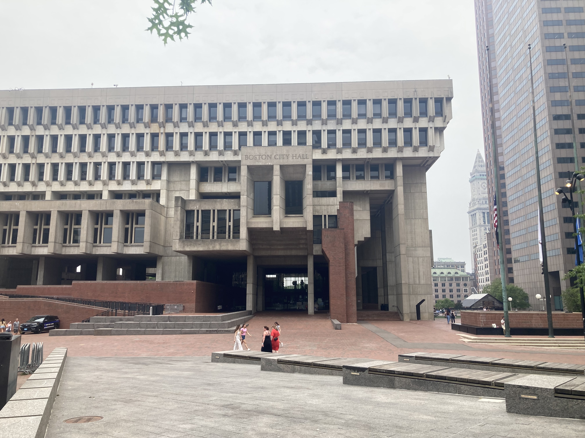
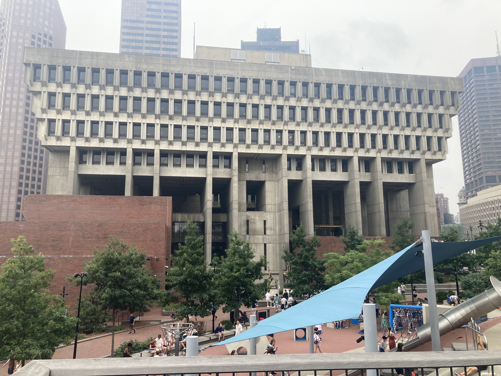
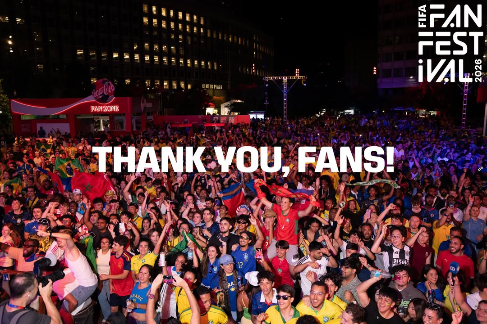
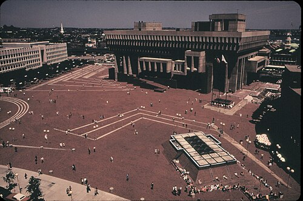
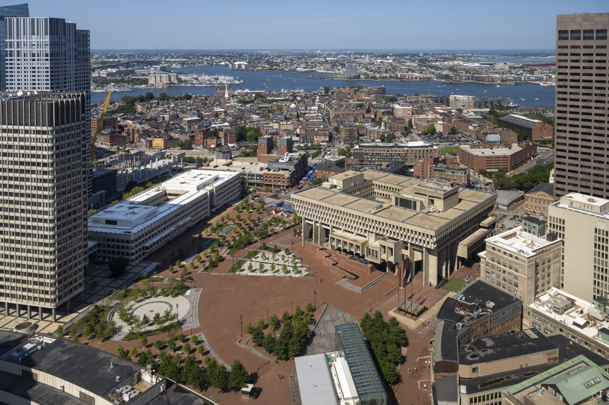

Andrew's Blog
Andrew's Blog


July's prompt is "City Hall". I am not sure much more explanation is needed.
In 2022, I participated in a Boston history pub crawl. We started outside the famous, historic, and touristy Faneuil Hall staring up at a massive monstrous fortress, the Boston City hall. While the focus of the crawl was on the bars that the Founding Fathers plotted in, the tour guide also talked about this building. It has lingered in my thoughts ever since.

City Hall lives in the Government Center section of Downtown Boston. We talked briefly about the Government Center Plaza last month in the Architecture Highlight. The plaza was designed by I.M. Pei. The City Hall building itself was built by a Boston based architecture firm, Kallmann McKinnell & Wood. This building is infamously designed in the Brutalist style and opened on February 11th, 1969.
Although Brutalism was especially popular across the globe in the post-war era of the 1950s and 60s, this building was always controversial. Many critics loved it. In 1969, it received the American Institute of Architects' Honor Award. In the same year, the Boston Society for Architecture's awarded it their top prize, the Parker Medal.
On the other hand, over the years it has received heavy criticism. Travel agency Virtualtourist called it the world's ugliest building based on a 2008 poll. California Home + Design magazine included Boston's City Hall on a list of 25 buildings to demolish right now (in 2013). In 2023, The website Buildworld.co ranked it the fourth ugliest building in the world and the second ugliest in the U.S. Only losing to the J. Edgar Hoover building in D.C.

I tend to agree with the supporters in this case. I think Boston's city hall is a really cool building. I think the biggest argument against the structure would be that it sticks out like a sore thumb. As an incredibly large concrete fortress surrounded by the historic brick buildings of old Boston, it is a little out of place. I think that is kind of cool though. I think it's hard to call it an ugly building. It is certainly awe striking. Our mayor likes it. Mayor Wu announced City Hall as a Boston Historic Landmark in 2025.
Some detractors cite the large empty plaza space as a major downside. While it is a big space in a downtown where space is a premium, I think it is well used. It hosts many events. The large Boston Calling music festival previously was held here. The 2026 Fifa World Cup Fan Festival for Boston happened in this plaza. Boston Pride and the Boston Bike festival are hosted here. It is host to many smaller cultural events as well. Protests like to culminate their marches here and give space for speakers. It is a well used space.

Over the years it has improved as well. What once was a giant red field of bricks is now filled with art installations, statues, water features, food trucks, trees, and a playground. It has evolved and improved over time.


The playground has become an iconic tourist destination in recent years due to the viral "Cop slide" incident. On August 1st 2023, A video went viral on TikTok showing a police officer sliding down and launching out of the slide at high speed. I have no idea how he did this, every time I have gone on this slide it is slow. Nevertheless, by August 3rd of that year, there was nearly a 45 minute wait to use the slide. 3 years later, the slide is still popular. Many of the visitors to Boston for the world cup sought it out for a ride.

This fortress has sparked many debates over the years. It costs the city millions to acquire the land and maintain the structure. The topic is divisive over if we should even keep it around. But for what it's worth it is our city hall and it is iconic. I like having it around.
Subscribe to the RSS Feed to see more flâneur content!